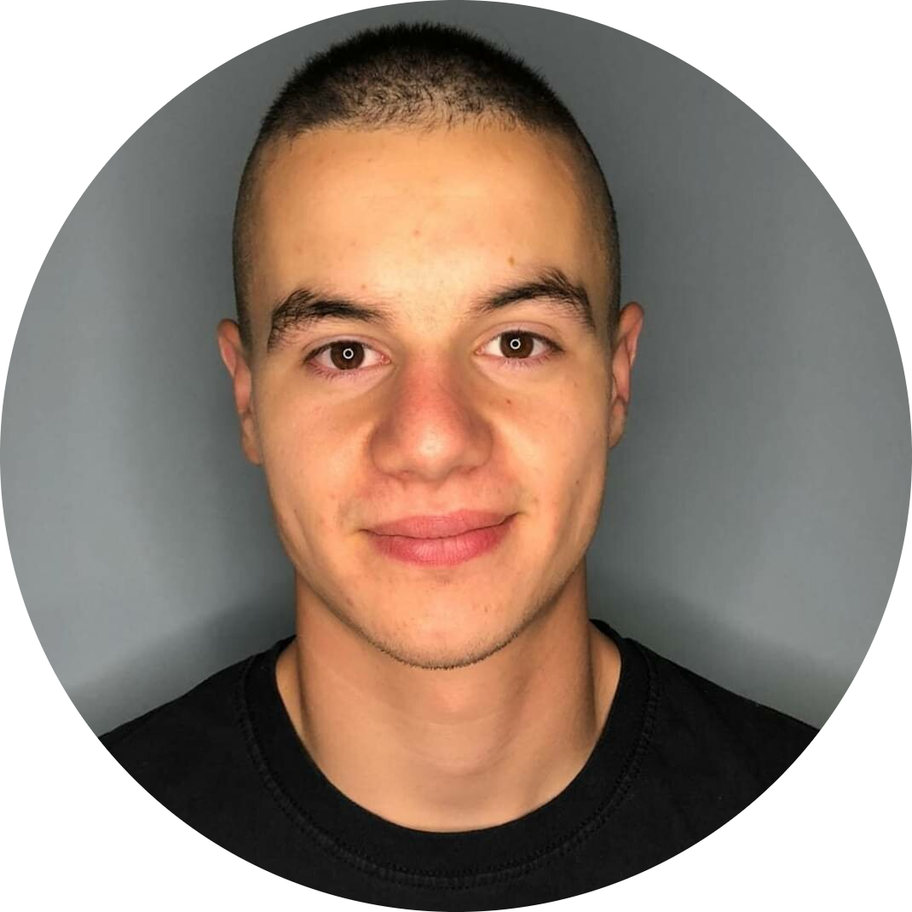

|  |
Yusein KerdakovFormer MMA, Jiu-Jitsu & Grappling competitor(several times champion). Positive & Motivated I am Yusein Kerdakov, a 18-years old motivated and hard studying young person from Kostandovo, Bulgaria. My dream and goal is to become really experienced and knowledgeable in the field of programming, then pass on my knowledge and experience to those after me. I am working every single day to achieve my goal, I believe in myself, and I believe that I will achieve it, and also my goals in the future, thanks to my discipline and dedication in the process. Contact details: Facebook, Instagram, LinkedIn |
As a person who tries to develop himself every day, I know that the hobbies we have should also be well selected and help us with our development in themselves. I keep my list of hobbies small so that I can devote small but carefully focused time and attention to each of them daily.
I know that the brain, just like the any muscle in the body, gets stronger when we make it work harder and use it every day. Reading and coding are first in my list because they are the things that I feel develop the most algorithmic and logical thinking in me.
Character growth lies, in part, in pushing your body out of its comfort zone every day by exercising and taking care of it. The best compliment we can give our body is to demand more of it. I believe that good physical condition enhances the thought process. Strong spirit in a strong body.
| JavaScript | ★ ★ ★ ☆ ☆ | Python | ★ ★ ★ ☆ ☆ |
| HTML | ★ ★ ★ ☆ ☆ | CSS | ★ ★ ★ ☆ ☆ |
| Bootstrap | ★ ★ ★ ☆ ☆ | English | ★ ★ ★ ★ ★ |
| Bulgarian | ★ ★ ★ ★ ★ | Problem solving | ★ ★ ★ ★ ★ |
| Communication | ★ ★ ★ ★ ★ | Teamwork | ★ ★ ★ ★ ★ |
| Quick study | ★ ★ ★ ★ ★ | Study skills | ★ ★ ★ ★ ★ |
| Self learning | ★ ★ ★ ★ ★ | Easily adaptable | ★ ★ ★ ★ ★ |